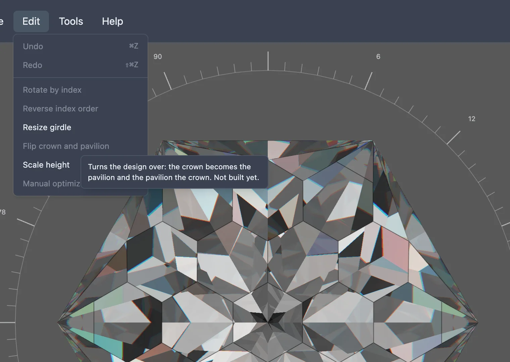

This feature is still being built. The menu item below exists, but choosing it does nothing yet.
A stone has two halves either side of its girdle: the crown, cut before the stone is turned over on the dop, and the pavilion, cut after. Flipping a design's crown and pavilion would swap the two — turning the whole cut over so what used to be the crown becomes the pavilion and the other way round. That would be useful for trying a design both ways up without redrawing it, or for adapting a pattern someone designed for one half onto the other.
None of that is built yet. In the studio's Edit menu, an item named Flip crown and pavilion is already there, but it is greyed out and does nothing when clicked. Hovering it shows a tooltip describing what it is meant to do, ending "Not built yet."
